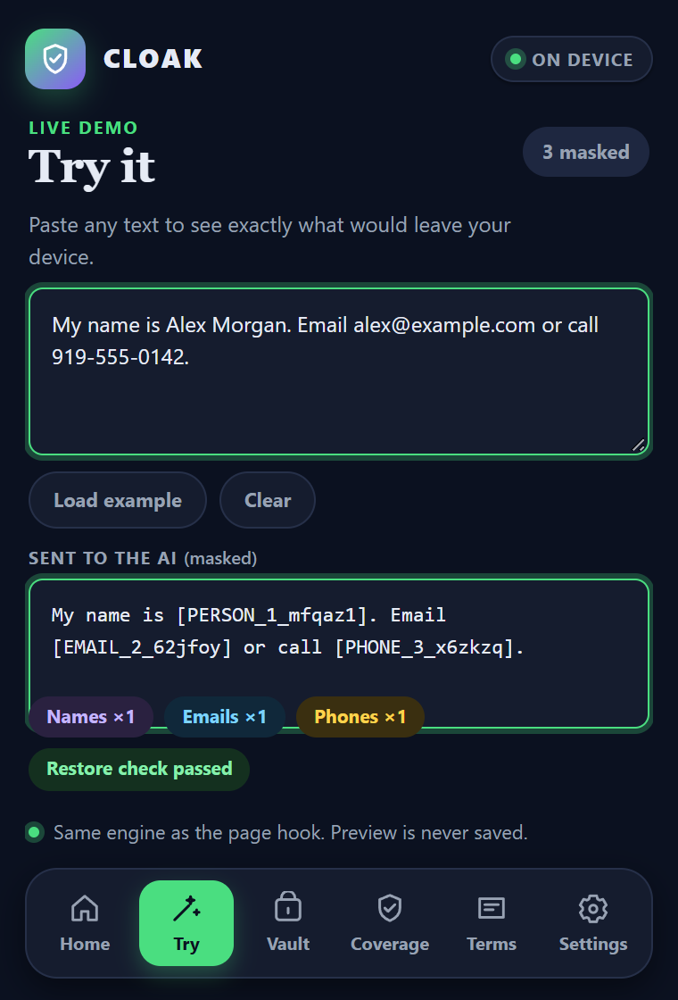
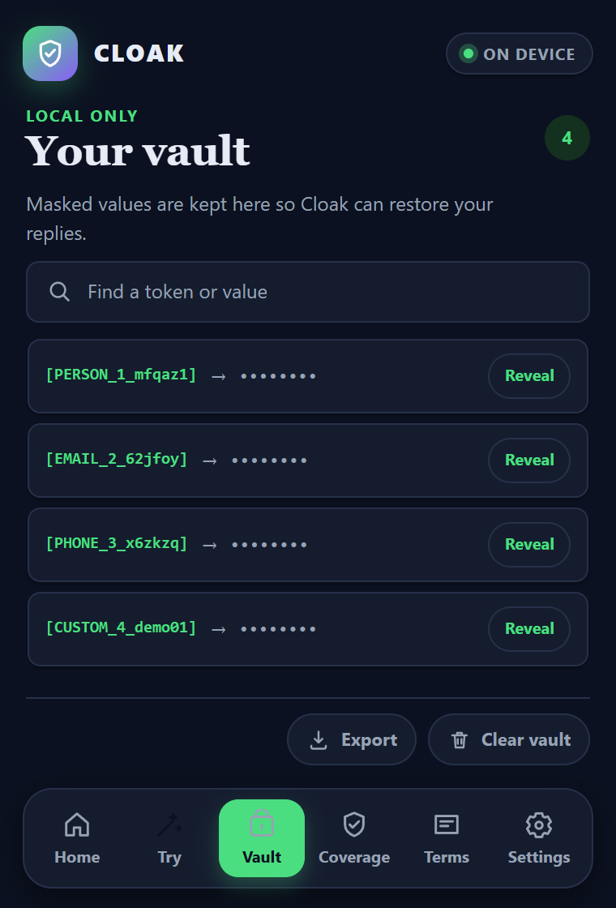
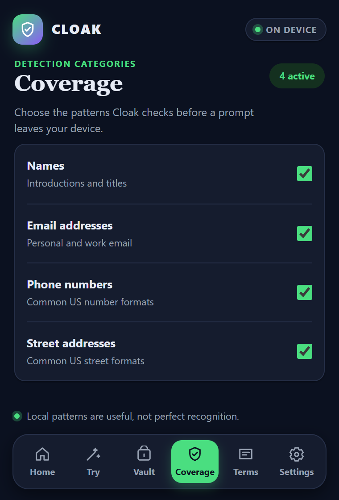

Bridge Chrome’s two worlds.
A bundle in the page’s main context wraps fetch and XHR. A postMessage bridge connects it to the isolated extension script and local vault.
AI PROGRESS. PERSONAL PRIVACY.
Keep the ideas flowing. Cloak replaces detected personal details with reversible tokens before ChatGPT requests leave your browser, then restores them in the reply.
01 — THE IDEA
From Wake County classrooms to hospital workflows, sensitive details belong under your control. Built by an eighth-grade student in NC–04, Cloak brings that conviction into the browser.
NORTH CAROLINA · THE PRIVACY CHALLENGE
If every student in this subtotal used ChatGPT with Cloak, that is an estimated 97,274 sensitive prompts a day to protect. Cloak masks detected identifiers; this models exposure, not verified prevention.
See Cloak in actionReviewed October 26, 2026. 49 named organizations: 10 government · 1 business · 9 k–12 education · 27 higher education · 2 healthcare. North Carolina organizations with published AI-specific privacy limits, including policies, official guidance and recommendations, approved-tool requirements, supplier rules, and a clinical AI-device restriction. Not a census or a count of blanket bans. One entry per named organization, not per rule, school, department, branch, or facility. Department-specific rules are labeled and counted once under their parent organization. State agencies are included only with separately cited publications; no other agencies are inferred from statewide coverage. The UNC System Office is counted only for its own administrative operations, separately from the universities. Advocate Health and its Atrium Health operations count as one organization.
267,382 student enrollments across 14 cited universities. Fall 2025 enrollment subtotal for 14 explicitly sourced universities only. Not the number blocked from AI, unique NC residents, actual Cloak users, or a deduplicated population. Excludes employees and all organizations without a selected enrollment figure. The UNC System figures are preliminary; all selected counts refer to fall 2025.
NC State University: 39,259 · North Carolina A&T State University: 15,275 · Duke University: 17,325 · Appalachian State University: 21,798 · UNC Charlotte: 32,207 · UNC Greensboro: 18,682 · East Carolina University: 27,153 · UNC Wilmington: 19,895 · Western Carolina University: 11,845 · Winston-Salem State University: 4,972 · Fayetteville State University: 7,623 · UNC Pembroke: 8,089 · North Carolina Central University: 9,160 · University of North Carolina at Chapel Hill: 34,099.
If every student represented by the 267,382 enrollments used ChatGPT with Cloak: 267,382 × 4.28 prompts/day × 8.5% = approximately 97,274 sensitive prompts per day, or 35,504,854 per year at the same daily rate. An illustrative full-use scenario, not observed adoption or measured prevention. It treats each enrollment as one user, assumes institutionally permitted use, and holds both study rates constant. The population is not deduplicated. Cloak can reduce exposure of identifiers it detects; the share of these sensitive messages it could fully protect has not been measured. This is not a compliance guarantee.
Epoch AI reports 4.28 prompts per calendar day among weekly active panelists in July 2025, from a selected US YouGov panel of 5,000 people who used ChatGPT in 2026. Harmonic found sensitive information in 8.5% of tens of thousands of business prompts across five AI tools in Q4 2024. Its nearly-one-in-ten finding covers customer, employee, legal/financial, security and code data, not PII alone. Combining these different populations gives a scenario, not a measured NC student rate. Annual volume uses 365 days and is rounded only after multiplication. No byte-size or detection-success assumption is made. Epoch AI: prompt frequency ↗ · Harmonic: sensitive prompt study ↗
No count is assigned to unnamed organizations, academic-integrity-only bans, or historical media reports without sufficiently current qualifying evidence. Recommendations and limited-scope rules are identified explicitly. Inclusion does not imply Cloak can satisfy or remove a rule: approved-tool, clinical-device, and other requirements remain applicable. Listed organizations are not represented as Cloak customers, partners, endorsers, or adopters. Truist confirms its Charlotte headquarters. Download the source register ↗
02 — A HOSPITAL WORKFLOW
A fictional patient history. A real ChatGPT conversation. Follow the original prompt into DevTools, then see the returned tokens become readable details again.
REAL CHROME CAPTURES · FICTIONAL PATIENT DATA
Personal identifiers and medical context are visible in ChatGPT’s composer. All patient details in this demonstration are fictional.
Captured in Chrome on October 25, 2026. Three unaltered screenshots document four stages; the restored view focuses the left pane of the response capture. This is a privacy demonstration, not clinical guidance. Healthcare scope ↗
These tokens replace the detected details in a supported outgoing request.
Fictional data only. This shows identifier masking, not HIPAA-compliant de-identification. Healthcare scope ↗
03 — THE CLOAK EXPERIENCE
Check protection. Inspect local mappings. Choose what gets masked. The actual Cloak interface, below.



04 — ENGINEERING YOU CAN TEST
AI replies arrive in pieces. Cloak’s stream buffer reassembles split tokens before restoring them. Open the workbench to test it yourself.
INCOMING CHUNKS · SYNTHETIC REPLY
CLOAK RESTORES
Preparing the local stream…
A bundle in the page’s main context wraps fetch and XHR. A postMessage bridge connects it to the isolated extension script and local vault.
The rewriteBody pipeline handles JSON and nested form data. Experimental code also parses Gemini’s base64-encoded protobufs.
Compromise NLP, address parsing, regular expressions, and custom terms identify values locally. Reversible tokens connect the outgoing prompt to the returning reply.
EXECUTABLE EVIDENCE
Live checks exercise the bundled functions with fixed samples. Repository suite verified October 24, 2026; integration tests use simulated provider requests.
SHIPPING WITH A CLEAR SCOPE
ChatGPT is the only supported platform in this release.
| Platform | Status | Current implementation |
|---|---|---|
| ChatGPT | Stable · supported | Outgoing interception and incoming stream restoration. The live captures above show both. |
| Google Gemini | Beta · experimental | Outgoing protobuf interception is implemented. Incoming restoration has reported buffering pauses; a restoration patch is planned. |
| Claude | Alpha · experimental | Not currently supported. WSS/WebSocket interception is planned for V2. |
DESIGNED AROUND YOUR CONTROL
It demonstrates masking four identifier types in a fictional medical-history prompt. The medical context remains in the outgoing request. Cloak does not establish HIPAA compliance or guarantee removal of all protected health information. Healthcare deployment requires an organization’s privacy and security review. Read HHS de-identification guidance ↗
Detection and token mappings stay local. The extension’s searchable vault supports individual reveal, export, and clear. Cloak has no server or telemetry; your AI service receives the masked request.
ChatGPT text chat requests on Chrome 111+. Gemini and Claude are experimental and are not supported in this release. Detected image/video generation requests bypass masking and trigger a notice. Pattern detection can miss details; review sensitive prompts. Tokens are placeholders, not encryption.
The expandable demos use the actual masking, restoration, stream-handling, and request-classification functions in a separate preview build. They process samples locally without starting an AI conversation or accessing extension data. The screenshot gallery documents a separate real ChatGPT conversation.
The roadmap includes a permission system where AI can request a specific detail only when needed—for example, to schedule a meeting—and the user decides whether to share it. This is planned functionality.
BUILT IN DISTRICT FOUR. BUILT FOR WHAT’S NEXT.
Chrome extension + source included · No account required
Download the ZIP above and extract it. The ready-to-load extension and its source code are included.
Open chrome://extensions, enable Developer mode, and select Load unpacked. Choose the folder containing manifest.json.
Refresh ChatGPT. Open Cloak to check protection and choose your coverage.